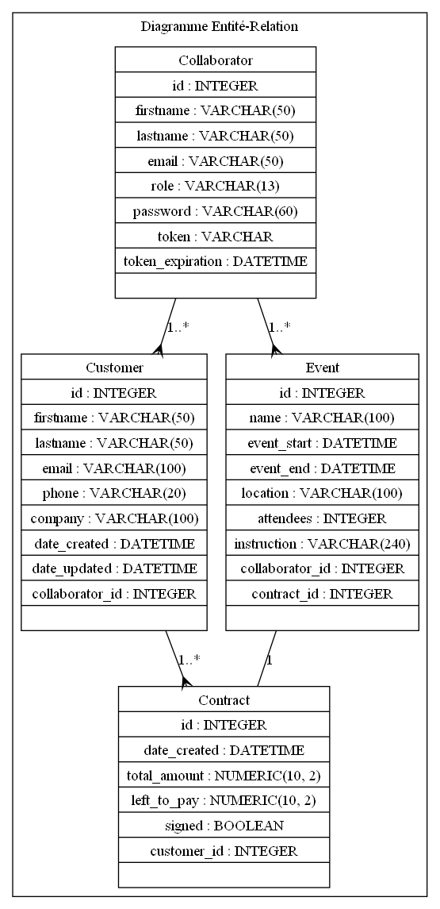

Graph ERD UML
¶

Project12
Navigation
Contents:
Menu: Connexion
Menu: Models
Menu: Utils
Generate ERD UML
Graph ERD UML
Related Topics
Documentation overview
Menu: Utils
Previous:
Generate ERD UML
Quick search